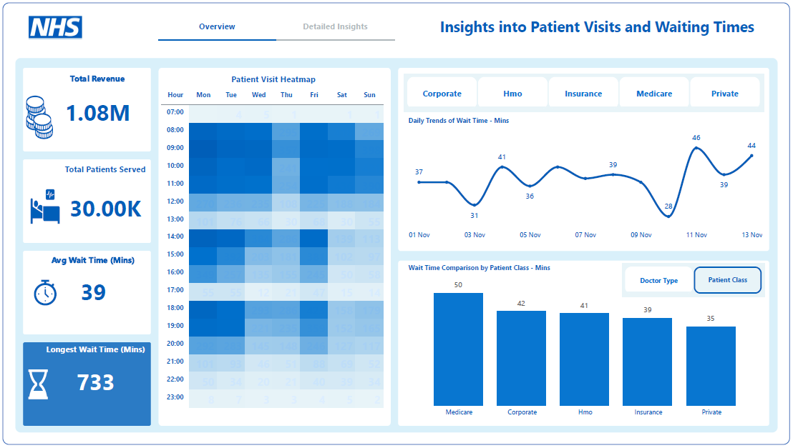

Hospital Operations and Patient Flow Dashboard
This dashboard combines operational and financial analytics to deliver actionable insights into hospital performance. It tracks key metrics such as revenue streams, patient volumes, and average wait times, segmented by patient class (Medicare, Corporate, HMO, Insurance, and Private). Using data visualizations—including heatmaps, trend lines, and performance distributions—it highlights peak demand periods, workload allocation among doctors, and the financial impact of patient delays. Designed to support decision-making, it demonstrates how advanced data modeling and visualization techniques can optimize resource allocation, improve patient experience, and drive revenue growth.
Customer Insights Dashboard
Analyzes customer behavior, segmentation, and retention metrics.